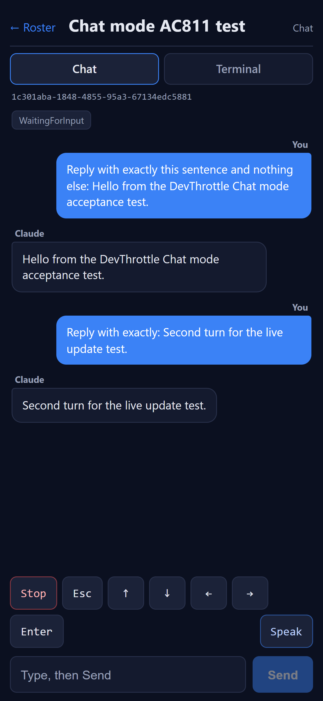
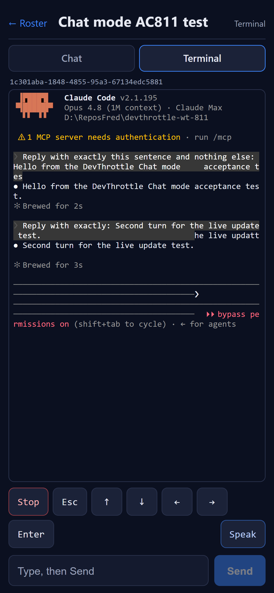
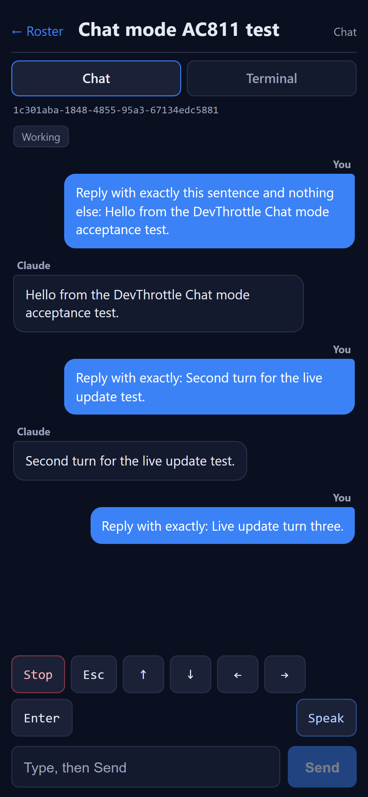
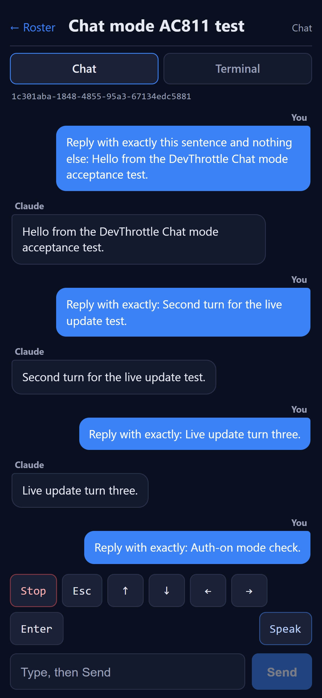

Issue #811 - [Mobile] Session: Chat mode
Developer Agent proof report (CenCon Development Method). Branch issue-811-chat-mode.
Builds on the merged #806 foundation and the #810 Terminal mode. Front-end only - the new mobile/
React PWA Chat view; no backend/Gateway change (all endpoints already exist, confirmed below).
What was implemented
- Chat view (
mobile/src/pages/Chat.tsx) selectable alongside Terminal for the same session.
Renders the CLEANED history from GET /sessions/{sid}/turns (chronological widgets) as a readable
transcript - assistant (left, "Claude") vs user (right, blue "You") turns - plus a /summary
context strip and the /wingman/explain "latest, explained" card when the Director has one cached.
Polls every 2s so new turns appear live.
- Shared input controls factored out of #810 Terminal into
mobile/src/session/SessionControls.tsx
(Type/Send via POST /prompt AppendEnter=true; Enter/arrows via /prompt AppendEnter=false;
Esc via /escape; Stop via /interrupt; Speak via the /wingman/tts nova proxy).
Terminal now consumes the same component - the keys are NOT duplicated.
- View toggle (
mobile/src/session/ViewTabs.tsx) switches Chat <-> Terminal for one session id.
- Typed client additions in
mobile/src/api/client.ts: getTurns, getSummary,
getExplain, all sending the injected Bearer token through the existing authHeaders().
- Speak in Chat reads the latest assistant reply (most recent
Text widget).
Endpoint confirmation (Assumptions resolved)
All required endpoints exist in src/CcDirector.ControlApi/ControlEndpoints.cs and were exercised live
against a running Director: GET /turns (line 1044), GET /summary (1093),
GET /wingman/explain (653), POST /prompt (1894), POST /escape (2072),
POST /interrupt (2048), and the TTS proxy (POST /tts, 1662; the app's /wingman/tts
maps to it). No missing endpoint - no Gateway change needed, matching the issue plan.
How it was proven
A test Director was launched in an isolated slot (scripts/agent-session-isolation.ps1, slot 15,
Control API http://127.0.0.1:7881) and a real Claude Code session created with a controllable prompt so
/turns returns genuine cleaned history. The real React app (dev build, no service worker) was served and
driven by Playwright at a true phone viewport (390 x 844, deviceScaleFactor 3, mobile), with the per-machine token
injected into the shell exactly as the Gateway's MobileApp does at runtime, and same-origin API calls
reverse-proxied to the test Director (/wingman/tts -> the Director's /tts). Every API call
is logged server-side (method, path, bearer present, status) - the network capture. Two runs: global auth DISABLED
(loopback Director does not enforce) and global auth ENABLED (the harness rejects any call lacking the bearer with 401,
emulating the Gateway with auth on). Session id used: 1c301aba-1848-4855-95a3-67134edc5881.
Acceptance criteria
AC1 - Chat renders cleaned history (turns + summary + wingman/explain), assistant vs user distinguishable, NOT the raw terminal PASS
Expected: an ordered, readable transcript distinguishing assistant from user; side-by-side with the raw Terminal of the same session shows Chat is the cleaned form.
Actual: the Chat view shows a blue right-aligned "You" bubble and a left "Claude" bubble for each turn, plus the
WaitingForInput summary chip. The Terminal view of the SAME session id shows the dense raw ANSI mirror.
Network shows GET /turns, /summary, and /wingman/explain all called and 2xx.
Chat - cleaned transcript

Terminal - raw mirror, SAME session

AC2 - Transcript reflects the live session (new turn appears without reload) PASS
Expected: after a new assistant turn completes it appears in Chat without a manual reload.
Actual: turn count grew from 4 to 6 (new user + new assistant turn) during a single page session; the
client log records {"t":"live","turns_before":4,"turns_after":6,"grew":true}. The "Live update turn three."
pair appended live below the earlier turns.
after assistant reply (live, no reload)

AC3 - Type + Send submits the line; the session acts on it PASS
Expected: typed text + Send reaches the session; the new user turn appears; POST /prompt returns 2xx.
Actual: typing then Send produced a new "You" bubble and a Claude reply; server log:
POST /sessions/{sid}/prompt bearer=true -> 200.
after Send - user turn appended

AC4 - Control keys identical to Terminal (Enter / Esc / Stop / arrows), one call each, 2xx PASS
Expected: Enter and each arrow send a raw key via /prompt (AppendEnter=false); Esc -> /escape; Stop -> /interrupt.
Actual (server log, auth-off run): six POST /prompt -> 200 (1 Send + 1 Enter + 4 arrows),
one POST /escape -> 200, one POST /interrupt -> 200. The shared SessionControls component
means these are the exact same controls Terminal uses.
POST .../prompt bearer=true -> 200 (Enter + 4 arrows, AppendEnter=false)
POST .../escape bearer=true -> 200 (Esc)
POST .../interrupt bearer=true -> 200 (Stop)
AC5 - Speak reads the latest assistant reply via plain-HTTP TTS PASS
Expected: Speak fetches TTS audio over plain HTTP (not a SignalR frame) for the latest assistant turn and plays it.
Actual: the latest assistant bubble was "Live update turn three."; the Speak button POSTed
/wingman/tts with body {"text":"Live update turn three."} - the exact latest reply - and the
Director returned 200 audio/mpeg (proxied to /tts). The page's <audio> element had its
src set and played (hasSrc:true). This confirms the spoken text matches the latest assistant turn.
client: {"t":"latest_assistant_bubble","text":"Live update turn three."}
client: req POST /wingman/tts body={"text":"Live update turn three."}
server: POST /tts bearer=true -> 200 audio/mpeg
AC6 - Every call carries the injected Bearer; view works with global auth ON and OFF PASS
Expected: bearer present on turns/prompt calls returning 2xx in both auth modes.
Actual: the app always attaches the injected token (single authHeaders() path). Auth-OFF run
(network-authoff.log): every call bearer=true -> 200/2xx. Auth-ON run
(network-authon.log, harness enforces the bearer): every app call bearer=true -> 200; a
deliberate control probe WITHOUT the bearer returned 401, proving enforcement is real and that the app's
identical behaviour works regardless of the Gateway auth setting.
auth ON, app calls: GET .../turns bearer=true -> 200
GET .../summary bearer=true -> 200
GET .../wingman/explain bearer=true -> 200
POST .../prompt bearer=true -> 200
auth ON, control probe (no bearer): GET .../turns bearer=false -> 401
auth-ON: Chat renders + Send works

AC7 - Move between Chat and Terminal for the same session; both control the same session PASS
Expected: the user can switch views for one session id; a Send from either reaches the same session.
Actual: the ViewTabs toggle navigates between /session/{sid} (Terminal) and
/session/{sid}/chat (Chat) carrying the same id. The screenshots above show both views of session
1c301aba-...; a prompt sent from the shared input is visible BOTH as a clean turn in Chat and as raw
output in the Terminal mirror of the same session.
Chat (toggle active = Chat)

Terminal (toggle active = Terminal), same id
Build & CenCon
npm run build (tsc --noEmit + vite build) - succeeds, 0 TypeScript errors.dotnet build cc-director.sln - Build succeeded, 0 Warning(s), 0 Error(s), and stays Node-free
(the npm step on CcDirector.Gateway.csproj is release-gated; a routine build did not invoke npm).- CenCon impact: No drift. Front-end only; no architecture/security change. No new endpoint. Same Bearer
pattern (no new secret, no new trust boundary).
- PII: the proof network JSON had its bearer values redacted (only a 7-char token fragment had appeared);
no token is visible in any screenshot (it lives in
window.__GW_TOKEN__, never rendered).
Artifacts in this folder
off-01..off-11 (phone-viewport screenshots, auth-off run), on-01/on-02 (auth-on run),
network-authoff.log / network-authon.log (server-side method/path/bearer/status capture),
client-network-authoff.json / client-network-authon.json (browser-side request/response
capture incl. the TTS body and live-update turn counts, bearer redacted).
I believe this is finished. All seven acceptance criteria are
met and proven on a phone-sized viewport against a running Director, with screenshots and network captures committed
alongside this report.